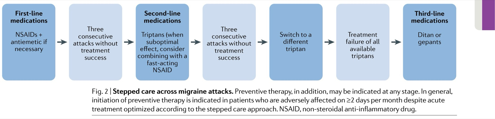

Q1. Paciente com 2 crises/mês, cada uma 48 h, incapacitante. Profilaxia:
Pergunta central
Quem merece profilaxia
3–4 crises por mês é a lei clássica — ou a incapacidade manda?
Corte 3–4/mês
Indicação clássica: pelo menos 3 a 4 crises de enxaqueca por mês.
Individualizar
3–4/mês é ponto de corte bem estabelecido, não regra cega. A conduta é sempre individualizada.
1–2 incapacitantes
Mesmo com 1–2 crises/mês, se a dor for incapacitante (perde dia de estudo; dura 4–72 h; às vezes perde mais de um dia), a pessoa pode se beneficiar de profilaxia.
Lembrete: dexa de recorrência precoce não substitui essa decisão.

Eigenbrodt AK et al. Nat Rev Neurol. 2021;17(8):501–514 — CC BY 4.0 · DOI 10.1038/s41582-021-00509-5 · fonte
Quando o limiar manda na profilaxia
O fluxograma reforça que frequência e impacto funcional orientam a profilaxia: corte clássico de 3–4 crises/mês, sem ignorar 1–2 crises incapacitantes.
Quiz
Q2. O corte de 3–4 crises/mês é: